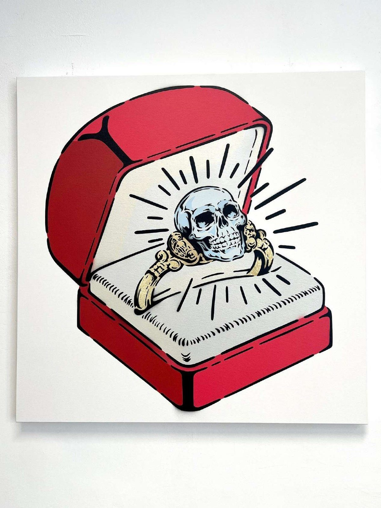
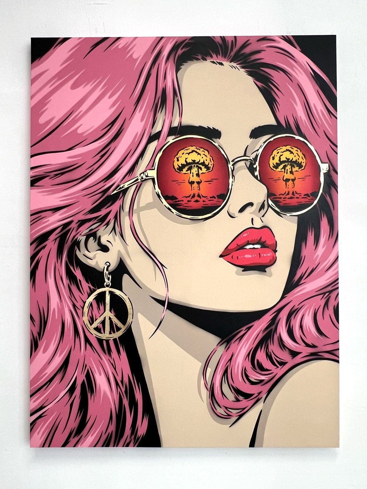

Rich Simmons
British contemporary pop artist
Pop art, stencil and street art

Works
Available now
Original works currently available from Rich Simmons through RSAS. Photographs to follow; ask us for images and details.
- Spray Caps ☮ White Green30 x 30 in · £6,000Enquire
- Finding ☮36 x 24 in · £3,850Enquire
- Black / Glow in the Dark, skull and peace40 x 40 in · £8,000Enquire
- White / Gold, skull and peace40 x 40 in · £8,000Enquire
- Lollipop, skull and peace40 x 40 in · £8,000Enquire
- Explosion Dusk ☮40 x 30 in · £7,200Enquire
Earlier works
Shown as examples of his work. These pieces are no longer available.




Rich Simmons is a British contemporary pop artist. His work brings together the rebellious energy of street art, the bold graphic language of comic books and the creative spirit of punk, built up through hand-cut stencils and a vivid contemporary palette.
RSAS view. Comic-book glamour with a punk edge: Simmons makes pop portraits that are instantly legible and carefully crafted, and his commissions turn a personal story into a statement piece.
- Practice
- Pop portraiture, hand-cut stencil, murals and bespoke commissions
- Awards
- Prestige Awards, Contemporary Artist of the Year, winner 2022 and 2023
- Museum exhibition
- Men of Steel, Women of Wonder, 2019: Crystal Bridges Museum of American Art, San Antonio Museum of Art and Addison Gallery of American Art
- Founder
- Art Is The Cure, a mental health movement launched in 2008
- Nationality
- British
- Career stage
- Established
- Market
- Primary and commissions
Biography
Practice
Entirely self-taught, Simmons made his name on the underground scene, painting on city walls and building an international following before moving into galleries. He combines traditional stencil techniques with a contemporary finish, and his pieces explore identity, duality and the contradictions of modern life beneath a bold surface.
He names Leonardo da Vinci and Stan Lee among his inspirations, and approaches each work as both inventor and storyteller.
Exhibitions
Over more than fifteen years he has exhibited across Europe and North America. Highlights listed by the artist include Opera Gallery, London (2011 and 2012), Imitate Modern and Box Galleries in London, Soho Contemporary Art and Taglialatella Gallery in New York, Castle Fine Art across the UK (2025) and Helm Gallery, Brighton (2026).
In 2019 his work was shown in the museum exhibition Men of Steel, Women of Wonder at Crystal Bridges Museum of American Art in Arkansas, the San Antonio Museum of Art in Texas and the Addison Gallery of American Art in Massachusetts.
Commissions
Simmons accepts bespoke commissions: original paintings that tell a personal story, commemorative portraits, large-scale murals for private residences and hand-painted fashion and accessories. A recent example is a portrait celebrating the 50th birthday of Emma Hayes OBE, head coach of the United States Women's National Team, tracing her journey from Chelsea to Olympic gold.
RSAS can introduce private clients, interior designers and hospitality projects to the artist and help shape a brief.
Art Is The Cure
Beyond the canvas, Simmons founded Art Is The Cure in 2008, a mental health movement that champions creativity as a way to turn difficult experience into purpose.
Press
Somehow, in his hands, the use of montage and slogans feels fresh and new.
Huffington Post
From the street to the gallery, enthusiasts of all stripes respond to his work.
Decompoz Magazine
His style and aesthetic are truly impressive.
Mark Hoppus, Blink-182